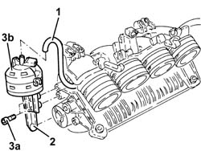

1072D20 air flow switching device actuator - r+r with modular manifold disconnected
- Path
- Procedures > 10 ENGINE > 1072 INLET AND EXHAUST MANIFOLDS > 1072D modular inlet manifold (v.i.s.) > 1072D20 air flow switching device actuator - r+r with modular manifold disconnected
- Kind
- repair procedure (removal / refitting; the operation number is the code)
- Applies to
- engines: 2.0 TS; all production periods
- Interactive page
- https://sloeber94.github.io/elrnDB-a147/en/#/3024937
Applies to: engines: 2.0 TS; all production periods
 Removing
Removing
 Refitting
Refitting1. Disconnect the vacuum intake pipe from the air flow switching device actuator and release it from the fastening.
2. Disconnect the linkage for the air flow switching cotrol actuator.
3. Undo the bolts (3a) and remove the air flow switching control actuator (3b).

Applies to: engines: 2.0 TS; all production periods
Refitting
RemovingPlace the air flow switch control actuator back in its housing.
Connect the linkag for the air flow switching control actuator.
Connect the air flow switching control actuator vacuum intake pipe and fasten it.